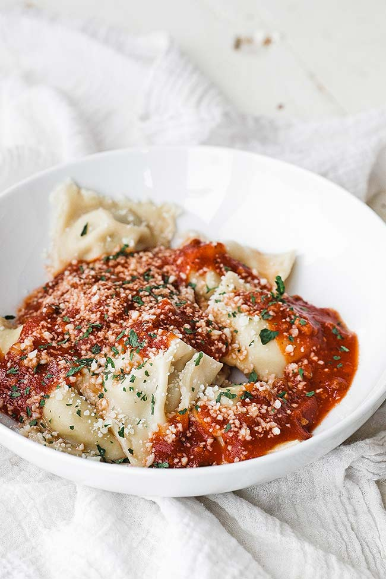

Back to Home
Ravioli Recipe

Description
A delicious ravioli recipe
Ingredients
-
Flour – Use fine ground durum wheat semolina flour. If you cannot find
this, use 00 or bread flour.
-
Eggs – You will need large room temperature or cold eggs for the filling
and the dough.
- Oil – Use a good extra virgin olive oil.
- Salt – I always use sea salt in my cooking and baking.
-
Water – You will need a few tablespoons of cold water for the ravioli
dough.
-
Meat – Use 80/20 ground sirloin. You can also use a leaner ratio like
90/10.
-
Cheese – You will need whole milk ricotta cheese and pecorino Romano
cheese.
-
Seasonings – A combination of dried oregano and garlic granules is used
for the filling. In addition, you will use salt and pepper to help
season the filling.
Steps
-
Make the dough: Make and knead the dough, then form it into a ball.
Tightly wrap the ball and refrigerate for at least 30 minutes.
-
Make the filling: Mix the filling ingredients together and set aside.
-
Make the sauce: Cook the garlic and pesto in oil, stir in the heavy
cream, and bring to a boil. Reduce to a simmer, then whisk in the
Parmesan.
-
Assemble the ravioli: Roll out the dough into sheets. Drop cheese
filling onto the dough about an inch apart. Cover with the top sheet of
pasta and make a seal around each portion of filling. Cut out individual
ravioli, then seal the edges.
-
Cook and bake the ravioli: Boil the ravioli in salted water until the
dumplings rise to the top and the filling is hot. Drain well.
-
Serve the ravioli: Divide the ravioli between bowls, top with the warmed
marinara sauce, then finish with the sauce.